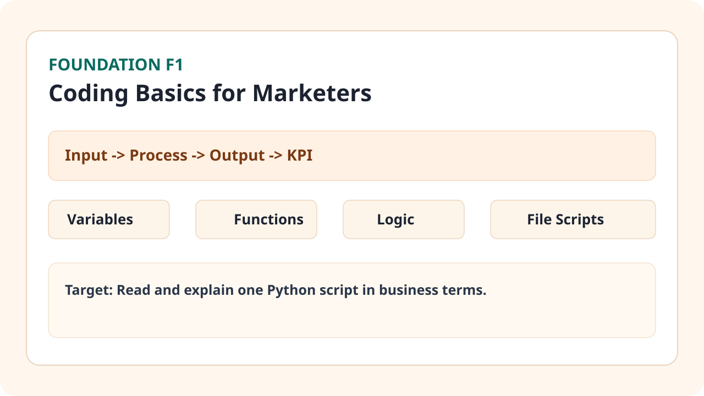

Business Situation

Concepts You Need
- Biến: giữ giá trị (ví dụ ngân sách, số lead, CTR).
- Hàm: gói một tác vụ lặp (ví dụ chuẩn hóa headline).
- Điều kiện: rẽ nhánh theo ngưỡng KPI (nếu CTR < 1.5% thì cần tối ưu).
- Vòng lặp: chạy cùng một xử lý cho nhiều dòng dữ liệu.
- Input/Output: dữ liệu từ sheet/API đi vào script và xuất ra dashboard hoặc file.
How Team Does This in Real Life
- Performance marketer định nghĩa input cần xử lý: campaign name, spend, clicks, leads.
- Ops hoặc người phụ trách automation viết script chuẩn hóa dữ liệu và gắn rule kiểm tra.
- Data owner kiểm tra output và cập nhật dashboard tuần.
- Mọi thay đổi logic đều phải ghi vào changelog để tránh lệch cách tính KPI.
Step-by-Step Workflow
- Xác định câu hỏi business: script này để trả lời KPI nào.
- Liệt kê input bắt buộc và format chuẩn.
- Chia logic thành từng hàm nhỏ: validate -> transform -> aggregate.
- Tạo output rõ ràng: file CSV, tab report hoặc bảng tổng hợp.
- Chạy test với 10 dòng dữ liệu thật và 3 dòng dữ liệu lỗi.
- So sánh kết quả script với số liệu tính tay trước khi dùng chính thức.
Mini Case + Numbers
| Tình huống | Trước khi hiểu coding basics | Sau khi áp dụng |
|---|---|---|
| Chuẩn hóa UTM report | 95 phút/tuần thủ công | 28 phút/tuần với script |
| Kiểm tra dữ liệu lỗi | Bỏ sót ~12% dòng lỗi | Bỏ sót < 2% nhờ validate rule |
| Báo cáo weekly KPI | Trễ deadline 2/4 tuần | Đúng hạn 4/4 tuần |
Kết luận: chỉ cần nắm logic coding cơ bản, marketer có thể giảm lỗi dữ liệu và rút ngắn thời gian reporting đáng kể.
Hands-on Task (45-90 phút)
- Mở một script Python ngắn 40-60 dòng (file mẫu trong repo học tập).
- Đánh dấu từng phần: input, xử lý, output, chỗ kiểm tra lỗi.
- Viết lại bằng lời business: script này giải quyết vấn đề gì cho team marketing.
- Thay đổi 1 rule nhỏ (ví dụ ngưỡng CTR) và chạy lại để xem output khác gì.
Artifact to Submit
- Marketing Automation Script Map (flow nhập -> xử lý -> xuất).
- File ghi chú giải thích từng hàm bằng ngôn ngữ business.
- 1 ảnh chụp màn hình output trước/sau khi đổi rule.
KPI / Completion Rubric
| Mức | Tiêu chí |
|---|---|
| Mức 0 | Chưa phân biệt được input, process, output. |
| Mức 1 | Đọc được flow nhưng chưa giải thích đúng mục tiêu business. |
| Mức 2 | Giải thích được script và chỉ ra điểm kiểm soát lỗi. |
| Mức 3 | Sửa được 1 rule nhỏ và diễn giải được tác động lên KPI. |
Common Failure Patterns
- Nhảy ngay vào code mà chưa rõ câu hỏi business cần trả lời.
- Chỉ nhìn output cuối, không kiểm tra bước transform trung gian.
- Đổi logic nhưng không ghi chú nên team không hiểu vì sao số KPI thay đổi.
Prompt Pack
Build prompt: "Giải thích script Python này theo cấu trúc input -> process -> output -> KPI impact, dùng ví dụ marketing".
Debug prompt: "Script trả về output sai ở cột CTR. Đây là input mẫu và output kỳ vọng. Hãy chỉ ra root cause và patch tối thiểu".
Review prompt: "Review đoạn code này cho mục tiêu readability của marketer non-coder. Chỉ đề xuất thay đổi không làm đổi behavior".
Tooling Notes (IDE/CLI/tool pros-cons)
- VS Code: dễ đọc file tree và search nhanh, nhưng cần setup extension cơ bản.
- CLI: chạy script nhanh và lặp lại chuẩn, nhưng ban đầu dễ nhầm đường dẫn.
- Codex pair: giải thích code tốt, nhưng phải cung cấp context rõ mới tránh trả lời chung chung.
Optional Upgrade (low-code path)
- Viết thêm hàm kiểm tra dữ liệu rỗng trước khi tính KPI.
- Tách config ngưỡng KPI ra file riêng để dễ chỉnh mà không sửa logic chính.
Đánh dấu tiến độ
Module này chưa hoàn thành
Đã hoàn thành Foundation 1